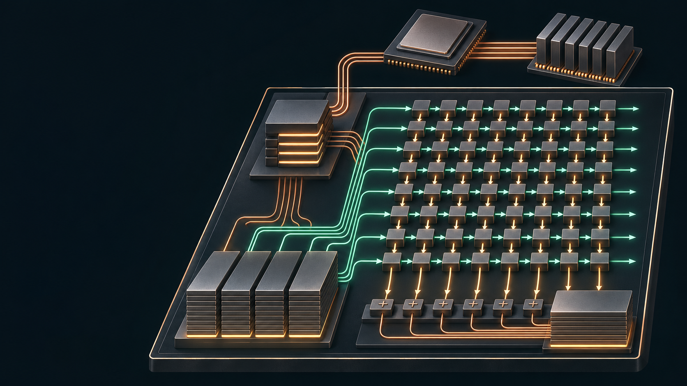

矩阵加速器，不是一颗完整 CPU
主核运行 C 程序，RoCC 发送命令；Gemmini 管理片上数据和矩阵计算。Chisel 是生成硬件的 Scala 程序，生成出的 RTL 才交给仿真与综合。

CONCEPTUAL SILICON LANDSCAPE · AI ILLUSTRATIONGEMMINI / AN OPEN ACCELERATOR GENERATOR
看懂矩阵如何变成数据流，
再把数据流，追到每一段实现。
一套有源码依据的中文交互教材。拆开控制、存储、计算与系统边界，建立能解释、能修改、能验证的架构模型。
源码事实带固定版本行号；教学模型说明简化条件；设计练习给出实现步骤和不变量。脉动阵列动画不是 Gemmini 周期精确仿真。
00 / FIND YOUR ENTRY POINT
从你熟悉的一侧出发。
每条路线都跨越软硬件边界。
主核运行 C 程序，RoCC 发送命令；Gemmini 管理片上数据和矩阵计算。Chisel 是生成硬件的 Scala 程序，生成出的 RTL 才交给仿真与综合。
Gemmini 的 Mesh 是脉动阵列。包交换 NoC、主机缓存与目录控制器是系统互联和一致性主题。教材会讲它们怎样实现，并明确哪些逻辑不在 Gemmini 主仓库里。
打开概念库 →01 / THE ARCHITECTURE WORKBENCH
点击模块，观察职责、状态和源码。
切换视图，从系统边界走到 PE。
02 / FOLLOW A COMMAND
用模块级步骤连接软件与硬件，
再用引用核查真实握手与完成条件。
03 / REASON WITH THE MACHINE
每个实验明确状态、事件与不变量。
参数改变之后，先预测，再观察。
04 / THE DEEP READ
逐章阅读，源码就在手边。
IMPLEMENT IT YOURSELF
独立教学 RTL：弹性缓冲、WS / OS PE、单行目录控制器。源码、testbench 与运行说明一起提供；缩小状态空间，先守住不变量。
05 / CONCEPT → STATE → LOGIC
06 / THE SOURCE IS THE EVIDENCE
核心代码离线阅读，完整归档路径可检索。
源码浏览器的 GitHub 链接固定到收录提交。
07 / TEST YOUR MENTAL MODEL
08 / METHODS, SOURCES & LIMITS
自动工具负责整理，人负责建立因果。
源码、分析与推演分别保留证据。
本次用开源 Repomix 分别整理硬件与软件。保留完整实现和行号，安全扫描通过。硬件 65 文件 / 260,002 tokens，软件 69 文件 / 218,865 tokens。没有使用压缩模式，也没有将源码发送到线上生成服务。
这近 48 万 tokens 仍需要按机制切分：配置 → 顶层 → 控制 → 存储 → 阵列 → 软件。多代理分别阅读，再核对接口和反例。自建索引将全部归档路径和精选全文接入本页。
本页基于 Gemmini 8c3f992、软件测试 7c540b3 与配套 Chipyard e020744。源码实例索引是词法分析，不能代替 Chisel elaboration、Verilator 仿真、综合、时序与形式验证。
本次验证了网页、教学算法和独立 RTL 原型；完整 Gemmini 的构建与性能数据不在这些结果之中。额外 Rocket Chip 等平台依赖尚未完整归档，平台协议说明同时引用官方上游。
首图为内置 image_gen 生成的概念插画，不是物理版图或精确连接图。准确结构见可交互架构图与源码。最终提示词、保存路径与审查 ↗
内嵌源码保留原文。以下上游许可与版权适用于对应代码；教学文字、独立教学 RTL 与网站实现的来源另见 README。